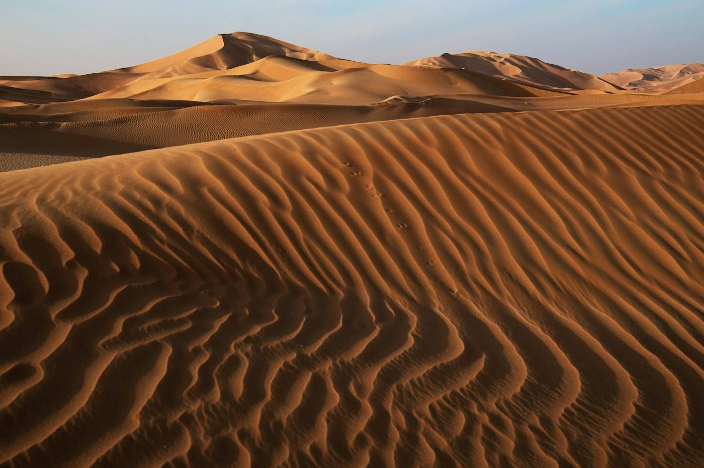

OMAN

- 출발 후보일2026.12.05 — 12.11
- 기간5박 7일 · 기내 1박
- 인원3–6명 · 3명 모이면 출발
요새의 그림자, 사막의 밤,
붐비지 않는 중동.
결제 아님 · 날짜 조정 가능 · 혼자 와도 돼요
WHY OMAN왜 오만일까
바흘라 요새는 1987년 유네스코 세계유산에 오른 진흙 요새예요. 니즈와 요새와 수크까지, 오만 내륙의 옛 왕국이 하루 동선에 모여 있어요.
두바이처럼 붐비지 않고, 차로 이동하는 길 자체가 사막과 협곡의 풍경이에요.
모래언덕 위에서 보는 별 — 사진보다 오래 남는 밤을 위해 가는 여행이에요.
FOR YOU이런 분께 맞아요
- 사막과 요새, 둘 다 한 번에 보고 싶은 분
- 붐비지 않는 중동 여행지를 찾는 분
- 차로 이동하는 시간도 풍경으로 즐길 수 있는 분
YOU WILL SEE이 여행에서 만나는 것
- 니즈와 요새와 수크
- 바흘라 요새 (UNESCO 세계유산)
- 오만 국립박물관
- 와히바 사막 4WD와 별 관찰

SAMPLE FLOW하루 흐름 예시
- 1일차무스카트 도착
- 2일차국립박물관과 옛 항구
- 3일차니즈와 요새·수크, 바흘라 요새
- 4일차사막 4WD, 사막의 밤(선택)
- 5일차무스카트 복귀, 자유시간
- 6~7일차귀국
일정은 예시예요. 인원·날씨·항공편에 따라 함께 조정해요.
JOIN THE NEXT TABLE오만, 같이 갈래요?
이름과 연락처만 남겨주세요. 3명이 모이면 일정과 예상 경비를 먼저 보내드려요.
FAQ자주 묻는 질문
혼자 신청해도 돼요?
네, 대부분 혼자 신청해요. 3명이 모이면 출발하는 소규모 여행이라 처음 만나도 금방 편해져요.
신청하면 결제해야 하나요?
아니요. 관심 신청은 결제나 예약 확정이 아니에요. 3명이 모이면 일정과 예상 경비를 먼저 안내드리고, 그때 정하시면 돼요.
날짜는 확정이에요?
지금 날짜는 출발 후보일이에요. 신청하신 분들 일정에 맞춰 조정할 수 있어요.
누가 같이 가요?
인생준준 세준이 함께 가요. 사학과를 나와 5년 동안 40번 넘게 해외를 다니며 역사 공부를 이어온 여행자예요. 유적 앞에서 같이 읽고, 같이 걷고, 같이 먹는 여행을 만들어요.